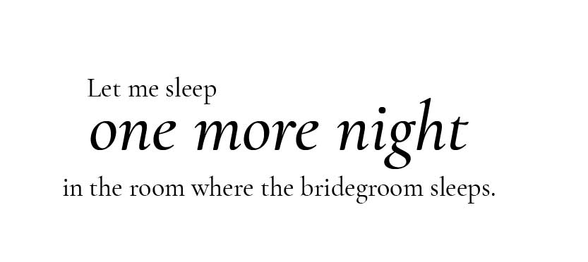
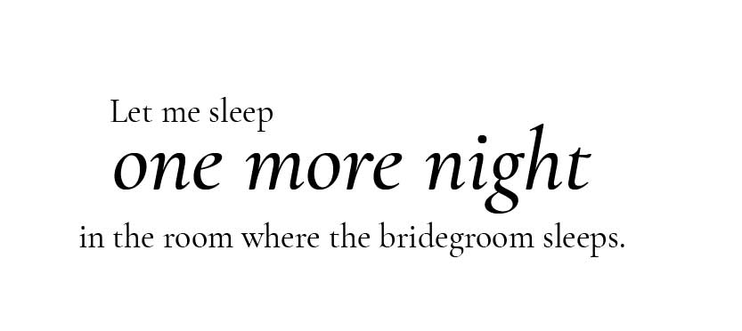

She grew sad because even that had not helped, and she went out into a meadow, and sat down outside the castle window and began to spin with her golden spinning wheel, and the princess with the long nose wanted to have it as well. and cried.
While she was sitting there she thought of the egg which the moon had given her. She broke it open, and out came a mother hen with twelve little chicks, all of gold. They ran about peeping, then crept back under the old hen's wings. It was the most beautiful thing to be seen in all the world. Then she got up, and drove them across the meadow before her, until the bride looked out of the window. She liked the little chicks so much that she immediately came down and asked if they were for sale.
The bride said yes, yes, she would be welcome to do that intending to cheat her as she had done the previous evening.
 
